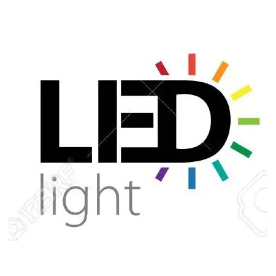

Slit-Lamps

Lumixx Slit Lamps
SL-3M
Sale Price: $3,650.00

Features
- l Drum Magnification: 10X, 16X, 25X
- l Parallel type, Galilean system Superior optic quality, provides stereoscopic and comfortable view
- l Warm LED Illumination, Better Conformity, Longer Life Time Work 50 thousand hours,and suitable for human tissue.
- l Precision Machining Makes Smooth and Flexible Movement
- l Brightness Control Continuously
- l Interface for laser and applanation tonometer reserved
With broad beam, wild field and high depth of field
Specifications
-
Optical Part
- Microscope Type | Galilean Type System
- Magnification Changer | Revolving Drum
- Magnification | 10X,16X,25X
- Eyepiece Magnification | 12.5x
- Visual Angle of Eyepiece | 13°
- PD Range | 52mm-85mm
- Diopter | ±7D
- Visual Field Diameter | 10X(22mm),16X(14mm), 25X(8.5mm) Illumination Part
- Illumination Type | Tower Type
- Light Source | Warm LED
- Brightless control | Continuously adjustable
- Illumination tilting | 5°,10°,15°,20°
- Slit Width | 0mm-14mm continuously adjustable
- Slit Height | 1mm-14mm continuously adjustable
- Slit Angle | 0°~180°continuously adjustable
- Slit Aperture Size | Φ0.2，Φ1，Φ3，Φ5，Φ10，Φ14（mm)
- Filter | Heat Aborption, Grey, Redfree(Green), Cobalt Blue
- * Voltage: 100~240V 48~62Hz Compatible
Optical system
MicroREC Kit + Beamplitter
MicroREC + BeamSplitter is an optical system that makes it possible to digitize your microscope or slit lamp so you can record or instant stream with your own phone.
To be able to record and broadcast microscopy imaging using any phone is a revolution in medicine itself, allowing a faster and better diagnosis, thanks to our affordable optical system.


Slit Lamp
Halogen: $4,580.00
LED: $6,099.00

Luxvision SL-1100
Tower illumination tilting. Stereoscopic optical system. Two magnifications 10x and 16x and includes 16x eyepiece delivering 16x and 25x capabilities. Smart design and a long list of features make Luxvision's SL-1100 Cross-Angle Stereovision Microscope an excellent fit for any practice. Well-placed controls and two-step magnification can be easily changed between 1x and 1.6x, using a conveniently located lever. Two available eyepieces (10x and 16x) offer even greater flexibility when examining ocular structures. A high luminance halogen lamp provides incredible clarity in any of seven available aperture diameters. The SL-1100 includes a Hruby Lens Kit for performing fundus exams and can also be equipped with an applanation tonometer. Two reflecting mirrors, a tilt mechanism, four illumination filters and more are among the many added features you'll enjoy when selecting the well-equipped SL-1100.
ESL-Emerald-18
The dynamic range in magnification power of the ESL-Emerald-18 grants it the nickname “Zoom”. The continuous field of view provides advantages over fixed magnification slit lamp instruments. Traditional fixed magnification slit lamps require large jumps in magnification between objectives causing the object in focus to be lost in the zooming process. With continuous zoom the object observed is never lost in sight while magnification is occurring which allows the practitioner to quickly change perspectives. The “zoom” is easily varied by the rotation of a drum and provides a seamless magnification range from 10x to ~30x to allow for a more fluid workflow for the visual health doctors.

Halogen: $7,590.00
LED: $8,250.00


ESL-Emerald-8
3X
The ESL-Emerald-8 is the first of the Ezer ESL-Emerald slit lamps to incorporate a convergent binocular microscope for greater light-gathering power than that of Greenough designs. Japanese optics and build ensure first-rate image quality. The precise magnification and focus of the oculars, together with the tower illuminator and adjustable slit beam, make the ESL-Emerald-8 a mainstay of the comprehensive evaluation of every anatomical eye compartment.

Halogen: $7,480.00
LED: $8,150.00


ESL-Emerald-26
The revolutionary Japanese design and new features of the ESL-Emerald-26 LED/Halogen yield top of the line optical efficiency which allow visual health doctors to perform a complete and thorough slit lamp examination. Slit lamp tower illumination is possible through either halogen or LED. The Ezer LED options are energy saving and generate no UV resulting in minimal strain to the patients’ eyes and allowing for a relaxed and pleasant patient experience. The LED background illumination system grants clear and bright images of slit light. With 58,000 Lux, the ESL-Emerald-26 has the maximal intensity for slit illumination out of all Ezer slit lamps.

Halogen: $9,790.00
LED: $10,890.00


SL-1400
Luxvision SL-1400 high end Slit Lamp Microscope comes with an advanced Galilean Optical System providing five magnifications (6x, 10x, 16x, 25x and 40x). Luxvision’s top-of-the-line SL-1400 tower illumination slit lamp boasts an advanced Galilean Optical System and five magnifications (6x, 10x, 16x, 25x and 40x) that can be easily switched using the unit’s convenient magnification selection dial. A high luminance halogen lamp provides incredible clarity in any of seven available aperture diameters. The field of view that’s possible with the SL-1400 is extraordinary. The unit also features several flexible options including tonometry, a beamsplitter, and an accessories mount that can be used for video. Two reflecting mirrors, four built in filters, a diffusion lens, two fixation targets and a Hruby Lens Kit all come standard in this versatile unit. The value that you will enjoy when you choose the SL-1400 will extend far beyond the great price tag.

Halogen: $5,350.00